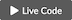

Lists¶
This page contains brief code snippets for list related operations. It is
intended as a resource for quickly looking up the syntax for a particular task,
most likely to jog a students memory.
While you may well learn something here, it is not written as a lesson.
Tip
You can modify and execute any of the code on this page.
 just click this icon at the top of the page
just click this icon at the top of the page followed by this one
Table of Contents
Creating¶
Bracket syntax¶
Create an empty list using [ ]:
a_list = []
print(a_list)
[]
Create a list of 3 None elements:
b_list = [None] * 3
print(b_list)
[None, None, None]
Create a list with initial elements:
numbers = [0, 1, 2, 3, 4, 5]
print(numbers)
[0, 1, 2, 3, 4, 5]
list constructor¶
Create an empty list using the list() constructor:
c_list = list()
print(c_list)
[]
Create a list from another iterable:
letters = list("abcdefghijklmnopqrstuvwxyz")
print(letters)
['a', 'b', 'c', 'd', 'e', 'f', 'g', 'h', 'i', 'j', 'k', 'l', 'm', 'n', 'o', 'p', 'q', 'r', 's', 't', 'u', 'v', 'w', 'x', 'y', 'z']
Selecting Elements¶
Elements are accessed via subscription with the syntax: COLLECTION[SELECTOR].
The SELECTOR can be:
Via index number¶
First element:
print(letters[0])
a
Second element:
print(letters[1])
b
Last element:
print(letters[-1])
z
Via slice¶
Or the SELECTOR can be a slice.
The synax is either of the following.
COLLECTION[START:STOP]COLLECTION[START:STOP:STEP]
From numbers[1] to before numbers[3]:
print(numbers[1:3])
[1, 2]
All but the first element:
print(numbers[1:])
[1, 2, 3, 4, 5]
All but the last element:
print(numbers[:-1])
[0, 1, 2, 3, 4]
Every other element from numbers[3] to before numbers[15]:
print(numbers[3:15:2])
[3, 5]
Elements in reversed order with a negative STEP number and a START that is
greater than STOP.
print(numbers[2::-1])
print(numbers[-1:-3:-1])
[2, 1, 0]
[5, 4]
Entire list:
print(numbers[:])
[0, 1, 2, 3, 4, 5]
Exceptions¶
An IndexError exception will be raised for any selectors using using
non-existant index numbers.
value = numbers[10]
print(value)
---------------------------------------------------------------------------
IndexError Traceback (most recent call last)
/tmp/ipykernel_2182/2154710734.py in <module>
----> 1 value = numbers[10]
2 print(value)
IndexError: list index out of range
value = numbers[-10]
print(value)
---------------------------------------------------------------------------
IndexError Traceback (most recent call last)
/tmp/ipykernel_2182/2526518119.py in <module>
----> 1 value = numbers[-10]
2 print(value)
IndexError: list index out of range
Suppress errors with a try except block:
try:
value = numbers[10]
except IndexError:
value = None
print(value)
None
Modification¶
Add¶
animals = ["bear", "chimpanzee", "elephant"]
print(animals)
['bear', 'chimpanzee', 'elephant']
At a specific position¶
animals.insert(2, "dolphin")
print(animals)
['bear', 'chimpanzee', 'dolphin', 'elephant', 'hedgehog']
animals.insert(0, "antelope")
print(animals)
['antelope', 'bear', 'chimpanzee', 'dolphin', 'elephant', 'hedgehog']
From iterable¶
Using .extend()¶
from pprint import pprint
animals.extend(["lynx", "ocelot", "puma"])
pprint(animals)
['antelope',
'bear',
'chimpanzee',
'dolphin',
'elephant',
'hedgehog',
'lynx',
'ocelot',
'puma']
With concatonation¶
animals = animals + ["skink", "turtle", "viper"]
pprint(animals)
['antelope',
'bear',
'chimpanzee',
'dolphin',
'elephant',
'hedgehog',
'lynx',
'ocelot',
'puma',
'skink',
'turtle',
'viper']
Or using the += operator:
animals += ["wolf", "zebra"]
pprint(animals)
['antelope',
'bear',
'chimpanzee',
'dolphin',
'elephant',
'hedgehog',
'lynx',
'ocelot',
'puma',
'skink',
'turtle',
'viper',
'wolf',
'zebra']
Repeteadly with multiplication¶
steps = ["rinse", "repeat"]
print(steps)
steps = (steps * 3)
print(steps)
['rinse', 'repeat']
['rinse', 'repeat', 'rinse', 'repeat', 'rinse', 'repeat']
Or using the *= operator:
steps = ["rinse", "repeat"]
print(steps)
steps *= 3
print(steps)
['rinse', 'repeat']
['rinse', 'repeat', 'rinse', 'repeat', 'rinse', 'repeat']
Remove¶
chars = list("Hello world")
del chars[4]
print(chars)
['H', 'e', 'l', 'l', ' ', 'w', 'o', 'r', 'l', 'd']
By index¶
chars = list("Hello world")
del chars[4]
print(chars)
['H', 'e', 'l', 'l', ' ', 'w', 'o', 'r', 'l', 'd']
By value¶
Remove first occurance of value using the .remove() method:
chars = list("Hello world")
chars.remove("l")
print(chars)
['H', 'e', 'l', 'o', ' ', 'w', 'o', 'r', 'l', 'd']
By slice¶
Using the del keyword:
chars = list("Hello world")
del chars[2:9]
print(chars)
['H', 'e', 'l', 'd']
By assigning to an empty list:
chars = list("Hello world")
chars[0:3] = []
print(chars)
['l', 'o', ' ', 'w', 'o', 'r', 'l', 'd']
All elements¶
chars = list("Hello world")
chars.clear()
print(chars)
[]
Remove and return¶
The last element¶
chars = list("Hello world")
removed = chars.pop()
print("removed:", repr(removed), "\n")
print(chars)
removed: 'd'
['H', 'e', 'l', 'l', 'o', ' ', 'w', 'o', 'r', 'l']
A specific element by position¶
chars = list("Hello world")
removed = chars.pop(2)
print("removed:", repr(removed), "\n")
print(chars)
removed: 'l'
['H', 'e', 'l', 'o', ' ', 'w', 'o', 'r', 'l', 'd']
Membership¶
chars = list("Mississippi")
words = ['Welcome', 'to', 'Python', 'Class']
Iteration¶
for loop¶
Iterate over each element:
colors = ["red", "blue", "green"]
for item in colors:
print(item)
red
blue
green
enumerate¶
Iterate over each index number and element:
meals = ["breakfast", "lunch", "dinner"]
for i, item in enumerate(meals):
print(i, item)
0 breakfast
1 lunch
2 dinner
Iterate over each index number and element value, starting i at 1:
drinks = ["water", "tea", "coffee"]
for i, item in enumerate(drinks, 1):
print(i, item)
1 water
2 tea
3 coffee
Aggregation¶
Functions that provide information about the container as a whole.
Maximum value¶
max([0, 1, 2, 3])
3
Minimum value¶
min([0, 1, 2, 3])
0
Sum of values¶
sum([0, 1, 2, 3])
6
Copying¶
DEFAULTS = [
{
'name': "Joe Smith",
'email': 'joe.smith@gmail.com',
},
{
'name': "Jane Doe",
'email': "jane.doe@gmail.com"
}
]
Alias¶
A reference or alias creates a new variable that points to the same object.
authors = DEFAULTS
authors is DEFAULTS
True
Shallow copy¶
A shallow copy creates a new container object then adds references to elements.
Using .copy():
authors = DEFAULTS.copy()
print(authors is DEFAULTS)
print(authors[0] is DEFAULTS[0])
False
True
Using copy.copy():
import copy
authors = copy.copy(DEFAULTS)
print(authors is DEFAULTS)
print(authors[0] is DEFAULTS[0])
False
True
Using a slice:
authors = DEFAULTS[:]
print(authors is DEFAULTS)
print(authors[0] is DEFAULTS[0])
False
True
Sorting¶
"""setup for sorting section"""
# define global FRUIT list
FRUIT = ["cherry", "apple", "date", "bananna", "elderberry"]
Returned sorting¶
The following functions return a sorted version of the collection and leave original collection unmodified.
# copy fruit list
fruit = FRUIT[:]
pprint(fruit)
['cherry',
'apple',
'date',
'bananna',
'elderberry']
Ascending order¶
result = sorted(fruit)
pprint(result)
['apple',
'bananna',
'cherry',
'date',
'elderberry']
Descending order¶
result = sorted(fruit, reverse=True)
pprint(result)
['elderberry',
'date',
'cherry',
'bananna',
'apple']
Reverse order¶
result = list(reversed(fruit))
pprint(result)
['elderberry',
'bananna',
'date',
'apple',
'cherry']
Order by callable key¶
Using function:
def order_by_length(text):
return len(text)
result = sorted(fruit, key=order_by_length)
pprint(result)
['date',
'apple',
'cherry',
'bananna',
'elderberry']
Using lambda:
result = sorted(fruit, key=lambda v: len(v))
pprint(result)
['date',
'apple',
'cherry',
'bananna',
'elderberry']
In-place sorting¶
The following methods and functions change the order of the original collection
and return None.
Ascending order¶
# reset fruit list
fruit = FRUIT[:]
pprint(fruit)
print("--------------")
fruit.sort()
pprint(fruit)
['cherry',
'apple',
'date',
'bananna',
'elderberry']
--------------
['apple',
'bananna',
'cherry',
'date',
'elderberry']
Descending order¶
# reset fruit list
fruit = FRUIT[:]
pprint(fruit)
print("--------------")
fruit.sort(reverse=True)
pprint(fruit)
['cherry',
'apple',
'date',
'bananna',
'elderberry']
--------------
['elderberry',
'date',
'cherry',
'bananna',
'apple']
Reverse order¶
# reset fruit list
fruit = FRUIT[:]
pprint(fruit)
print("--------------")
fruit.reverse()
pprint(fruit)
['cherry',
'apple',
'date',
'bananna',
'elderberry']
--------------
['elderberry',
'bananna',
'date',
'apple',
'cherry']
Order by callable key function¶
Using function:
# reset fruit list
fruit = FRUIT[:]
pprint(fruit)
print("--------------")
def order_by_length(text):
return len(text)
fruit.sort(key=order_by_length)
pprint(fruit)
['cherry',
'apple',
'date',
'bananna',
'elderberry']
--------------
['date',
'apple',
'cherry',
'bananna',
'elderberry']
Using lambda:
# reset fruit list
fruit = FRUIT[:]
pprint(fruit)
print("--------------")
fruit.sort(key=lambda v:len(v))
pprint(fruit)
['cherry',
'apple',
'date',
'bananna',
'elderberry']
--------------
['date',
'apple',
'cherry',
'bananna',
'elderberry']
Random order¶
# reset fruit list
fruit = FRUIT[:]
pprint(fruit)
print("--------------")
from random import shuffle
shuffle(fruit)
pprint(fruit)
['cherry',
'apple',
'date',
'bananna',
'elderberry']
--------------
['cherry',
'apple',
'elderberry',
'bananna',
'date']
Transformation¶
Generate a modified collection.
Mapping¶
Produce a new collection containing the results from applying a function to each element in a collection.
"""Setup for the Mapping section"""
# the collection to base mappings on
birth_years = [1954, 1956, 1984, 1986]
# used in relative_age()
REL_YEAR = 1994
# the function to apply
def relative_age(year):
return REL_YEAR - year
Using a for loop¶
# initialize a list the same size as birth_years filled with None values
ages = [None] * len(birth_years)
# iterate over birth years and map the cooresponding element in ages to
# the results from applying the function to that element
for i, year in enumerate(birth_years):
ages[i] = relative_age(year)
# print the ages list
print(ages)
[40, 38, 10, 8]
Using list comprehension¶
ages = [relative_age(year) for year in birth_years]
print(ages)
[40, 38, 10, 8]
Filtering¶
Produce a new collection containing only elements which, when a applying a function, return a truthy value.
"""Setup for the Filtering section"""
# the function to apply
def is_adult(age):
return age >= 18
# print the previously created ages collection to base the filterings on
print(ages)
[40, 38, 10, 8]
Using a for loop¶
# initialze an empty list
adults = []
# iterate over ages and append elements that results in True
# when applying the filtering function
for age in ages:
if is_adult(age):
adults.append(age)
# print the adults list
print(adults)
[40, 38]
Using list comprehension¶
adults = [ age for age in ages if is_adult(age) ]
print(adults)
[40, 38]
Using filter¶
adults = list(filter(is_adult, ages))
print(adults)
[40, 38]
Typecasting¶
str to list¶
individual characters¶
list("abc")
['a', 'b', 'c']
split on whitespace¶
"list info search".split()
['list', 'info', 'search']
split on delimiter¶
"555-555-5555".split("-")
['555', '555', '5555']
split on newlines¶
"a\nb\nc\n".splitlines()
['a', 'b', 'c']
split on pattern¶
import re
re.split(r"[./]", "github.com/git")
['github', 'com', 'git']
dict to list¶
fruit_sizes = {'cherry': 6, 'bananna': 7, 'date': 4, 'elderberry': 10, 'apple': 5}
list to string¶
"".join(["a", "b", "c"])
'abc'
list to dict¶
dict([["a", 1], ["b", 2]])
{'a': 1, 'b': 2}
dict(zip(["a", "b"], [1, 2]))
{'a': 1, 'b': 2}